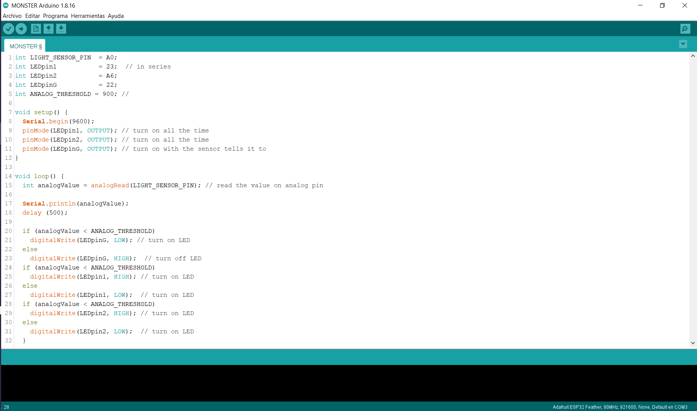
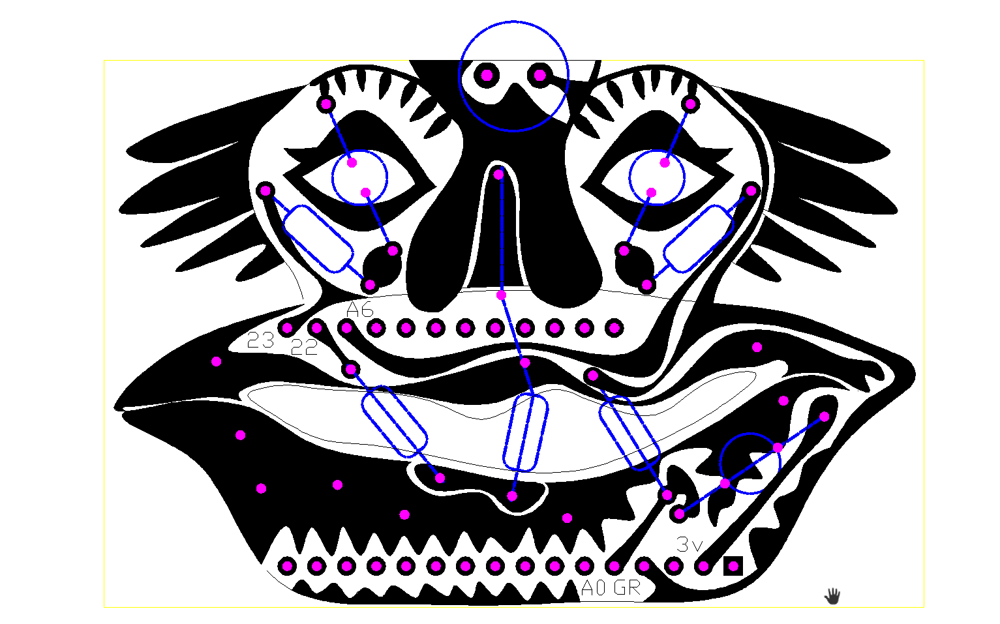
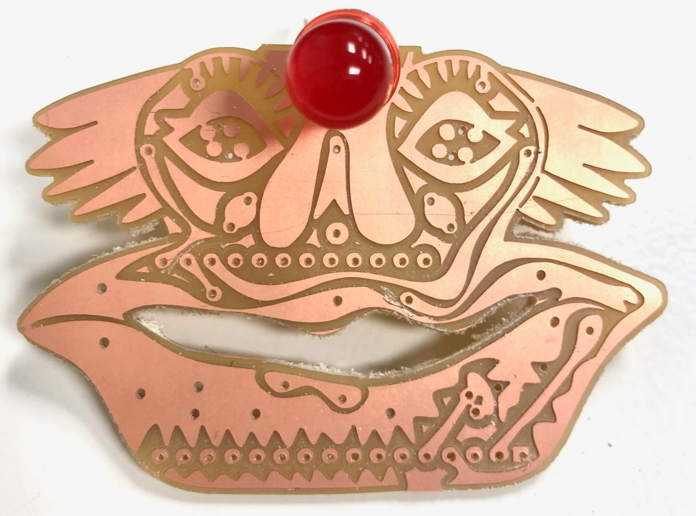
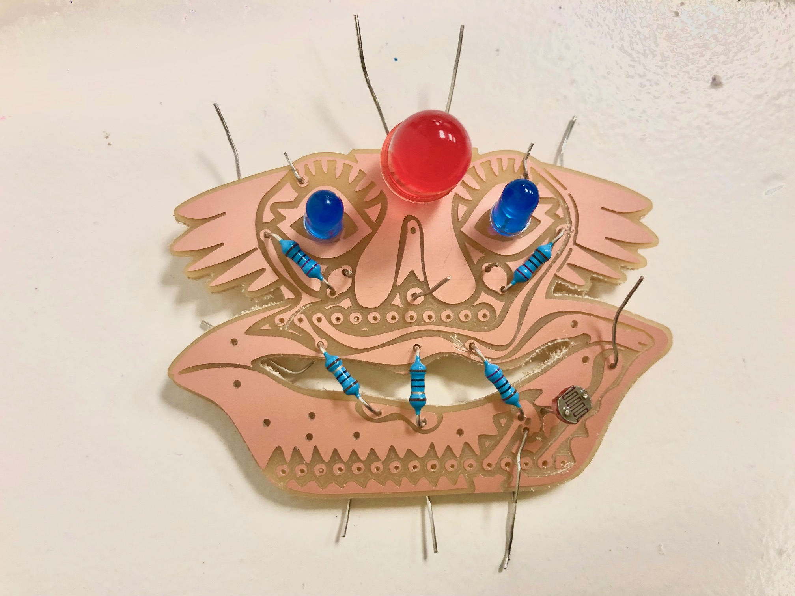
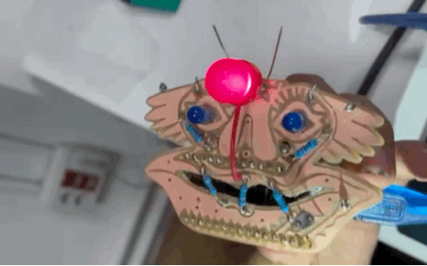

AN INTERACTIVE PIN
THE ARDUINO
WHEN YOU LIGHT THE SENSOR "THE THIRD EYE" TURNS ON AN THE OTHER LEDS TURNS OFF


THE BLUEPRINTS OF THE CIRCUIT IN A "DRIKI CHARACTER" SHAPE
IN COLOR BLUE AND DASHED LINE, THE ITEMS TO SOLDERING; IN COLOR PINK, THE HOLES; AND THE BLACK, THE CIRCUITS

TESTING THE PIECES BEFORE SOLDERING
CHECK SIZES OF THE HOLES, CIRCUITS.


SOLDERING THE PCB
LEDS, RESISTORS AND SENSOR

THE BATTERY AND THE PCB
TESTING IF IT WORKS AS GOOD AS IT WORKS WHEN IS CONNECTED TO THE COMPUTER 